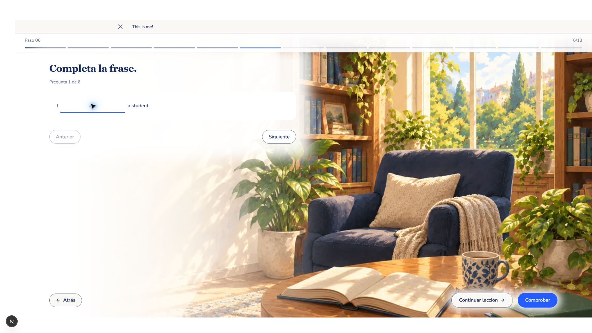
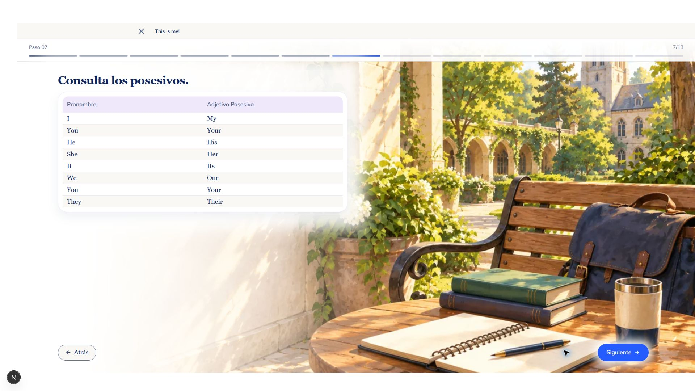
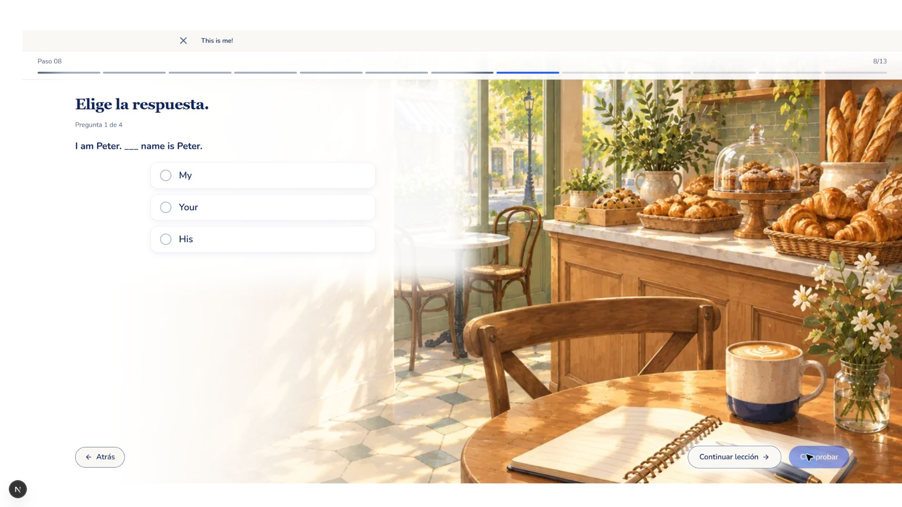
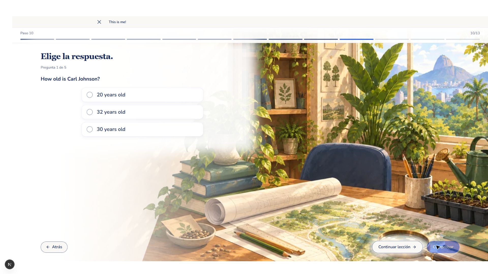
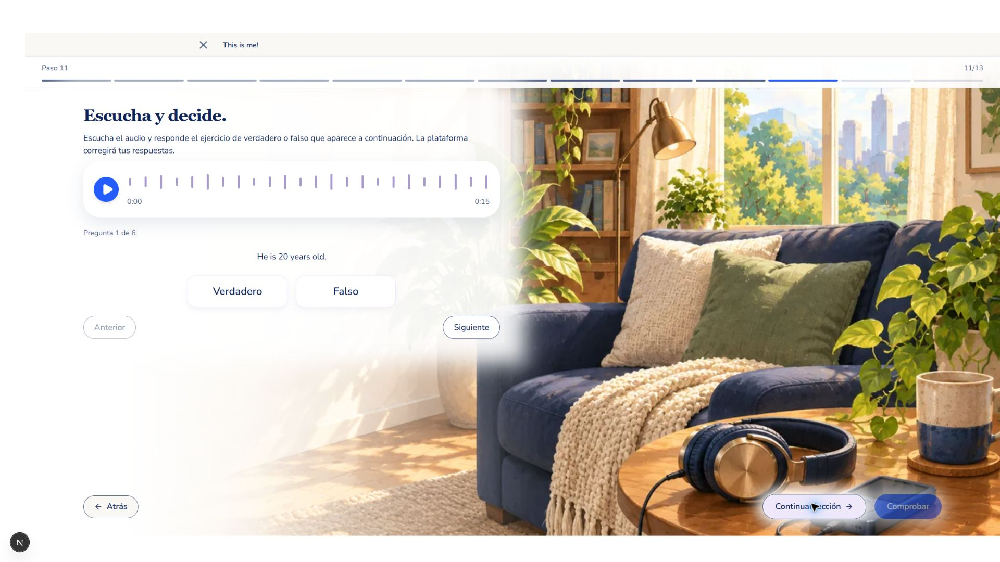
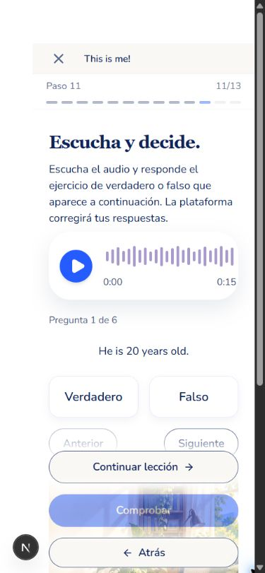
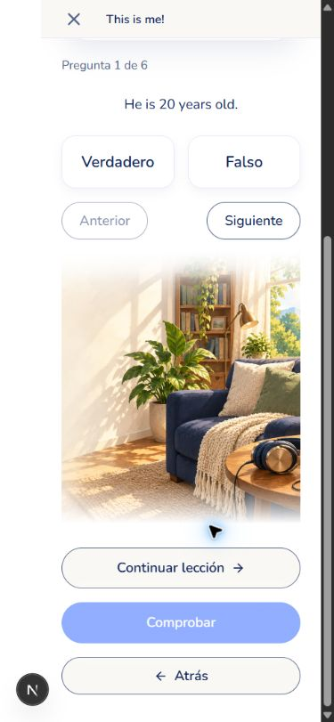

Biblioteca
Referencia del usuario
Implementación local

La referencia define escala y fundido; cada actividad utiliza un entorno diferente. Capturas 1920×1080. Shell local sin sesión autenticada.






